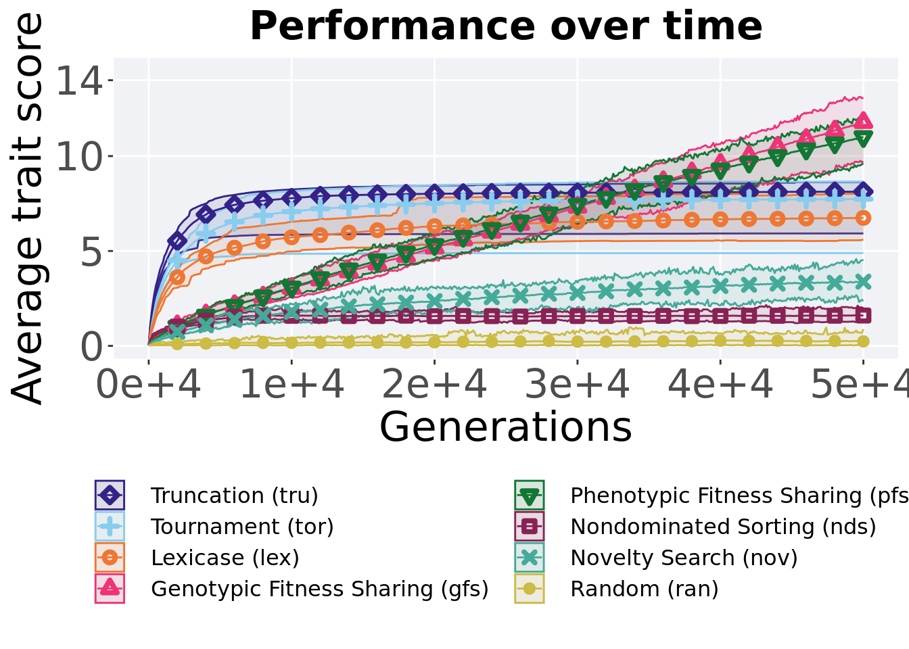
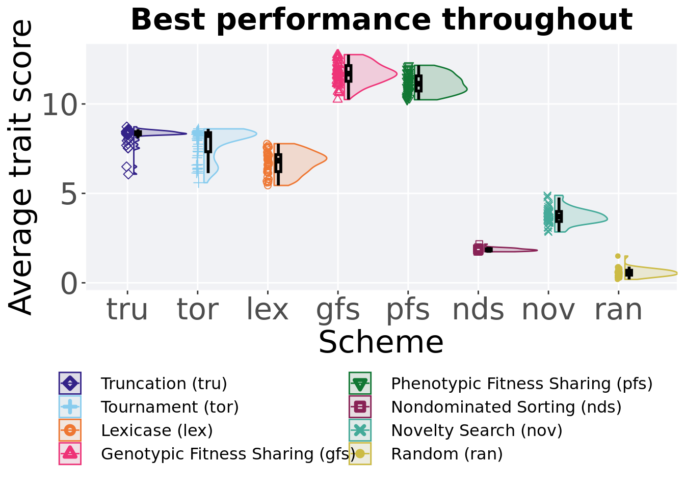
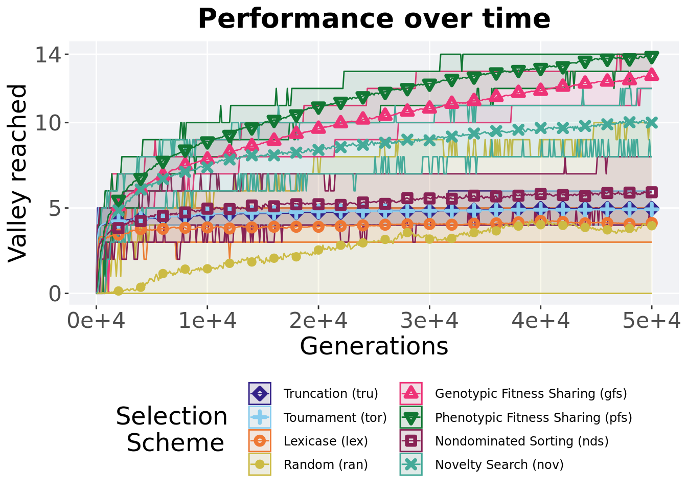
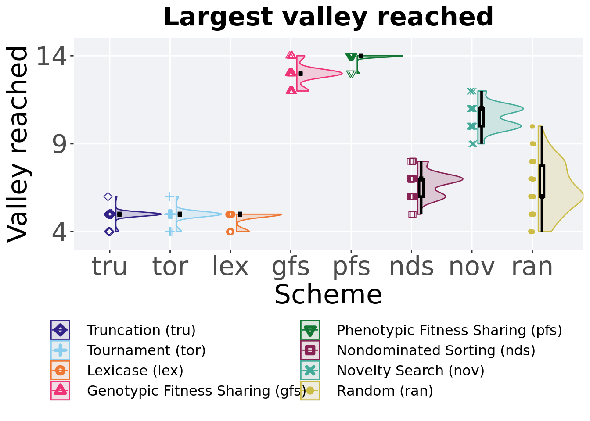

Chapter 3 Ordered exploitation results
Here we present the results for best performances found by each selection scheme on the ordered exploitation diagnostic with valley crossing integrated. 50 replicates are conducted for each scheme explored.
3.2 Data setup
DIR = paste(DATA_DIR,'ORDERED_EXPLOITATION/', sep = "", collapse = NULL)
over_time_df <- read.csv(paste(DIR,'over-time.csv', sep = "", collapse = NULL), header = TRUE, stringsAsFactors = FALSE)
over_time_df$scheme <- factor(over_time_df$scheme, levels = NAMES)
best_df <- read.csv(paste(DIR,'best.csv', sep = "", collapse = NULL), header = TRUE, stringsAsFactors = FALSE)
best_df$acro <- factor(best_df$acro, levels = ACRO)3.3 Performance over time
Best performance in a population over time. Data points on the graph is the average performance across 50 replicates every 2000 generations. Shading comes from the best and worse performance across 50 replicates.
lines = over_time_df %>%
group_by(scheme, gen) %>%
dplyr::summarise(
min = min(pop_fit_max) / DIMENSIONALITY,
mean = mean(pop_fit_max) / DIMENSIONALITY,
max = max(pop_fit_max) / DIMENSIONALITY
)## `summarise()` has grouped output by 'scheme'. You can override using the
## `.groups` argument.over_time_plot = ggplot(lines, aes(x=gen, y=mean, group = scheme, fill = scheme, color = scheme, shape = scheme)) +
geom_ribbon(aes(ymin = min, ymax = max), alpha = 0.1) +
geom_line(size = 0.5) +
geom_point(data = filter(lines, gen %% 2000 == 0 & gen != 0), size = 1.5, stroke = 2.0, alpha = 1.0) +
scale_y_continuous(
name="Average trait score",
limits=c(0, 14.5),
breaks=c(0,5,10,14)
) +
scale_x_continuous(
name="Generations",
limits=c(0, 50000),
breaks=c(0, 10000, 20000, 30000, 40000, 50000),
labels=c("0e+4", "1e+4", "2e+4", "3e+4", "4e+4", "5e+4")
) +
scale_shape_manual(values=SHAPE)+
scale_colour_manual(values = cb_palette) +
scale_fill_manual(values = cb_palette) +
ggtitle('Performance over time')+
p_theme + theme(legend.title=element_blank(),legend.text=element_text(size=12)) +
guides(
shape=guide_legend(ncol=2, title.position = "bottom"),
color=guide_legend(ncol=2, title.position = "bottom"),
fill=guide_legend(ncol=2, title.position = "bottom")
)
over_time_plot
3.4 Best performance throughout
Best performance reached throughout 50,000 generations in a population.
plot = filter(best_df, var == 'pop_fit_max') %>%
ggplot(., aes(x = acro, y = val / DIMENSIONALITY, color = acro, fill = acro, shape = acro)) +
geom_flat_violin(position = position_nudge(x = .1, y = 0), scale = 'width', alpha = 0.2, width = 1.5) +
geom_boxplot(color = 'black', width = .07, outlier.shape = NA, alpha = 0.0, size = 1.0, position = position_nudge(x = .16, y = 0)) +
geom_point(position = position_jitter(width = 0.03, height = 0.02), size = 2.0, alpha = 1.0) +
scale_y_continuous(
name="Average trait score",
limits=c(0, 14.5),
breaks=c(0,5,10,14) ) +
scale_x_discrete(
name="Scheme"
)+
scale_shape_manual(values=SHAPE)+
scale_colour_manual(values = cb_palette, ) +
scale_fill_manual(values = cb_palette) +
ggtitle('Best performance')+
p_theme + theme(legend.title=element_blank())
plot_grid(
plot +
theme(legend.position="none"),
legend,
nrow=2,
rel_heights = c(3,1)
)
3.4.1 Stats
Summary statistics for the best performance.
performance = filter(best_df, var == 'pop_fit_max')
performance$acro = factor(performance$acro, levels = c('gfs','pfs','tru','tor','lex','nov','nds','ran'))
performance %>%
group_by(acro) %>%
dplyr::summarise(
count = n(),
na_cnt = sum(is.na(val)),
min = min(val / DIMENSIONALITY, na.rm = TRUE),
median = median(val / DIMENSIONALITY, na.rm = TRUE),
mean = mean(val / DIMENSIONALITY, na.rm = TRUE),
max = max(val / DIMENSIONALITY, na.rm = TRUE),
IQR = IQR(val / DIMENSIONALITY, na.rm = TRUE)
)## # A tibble: 8 x 8
## acro count na_cnt min median mean max IQR
## <fct> <int> <int> <dbl> <dbl> <dbl> <dbl> <dbl>
## 1 gfs 50 0 9.79 11.9 11.9 13.2 1.03
## 2 pfs 50 0 9.69 11.2 11.2 12.1 0.779
## 3 tru 50 0 5.92 8.36 8.13 8.63 0.203
## 4 tor 50 0 4.89 8.26 7.73 8.65 1.17
## 5 lex 50 0 5.59 6.70 6.76 8.02 0.792
## 6 nov 50 0 2.82 3.82 3.79 4.74 0.515
## 7 nds 50 0 1.57 1.83 1.84 2.18 0.116
## 8 ran 50 0 0.279 0.568 0.587 1.04 0.280Kruskal–Wallis test illustrates evidence of statistical differences.
##
## Kruskal-Wallis rank sum test
##
## data: val by acro
## Kruskal-Wallis chi-squared = 379.83, df = 7, p-value < 2.2e-16Results for post-hoc Wilcoxon rank-sum test with a Bonferroni correction.
pairwise.wilcox.test(x = performance$val, g = performance$acro, p.adjust.method = "bonferroni",
paired = FALSE, conf.int = FALSE, alternative = 'l')##
## Pairwise comparisons using Wilcoxon rank sum test with continuity correction
##
## data: performance$val and performance$acro
##
## gfs pfs tru tor lex nov nds
## pfs 5.0e-06 - - - - - -
## tru < 2e-16 < 2e-16 - - - - -
## tor < 2e-16 < 2e-16 0.33 - - - -
## lex < 2e-16 < 2e-16 7.8e-13 2.8e-07 - - -
## nov < 2e-16 < 2e-16 < 2e-16 < 2e-16 < 2e-16 - -
## nds < 2e-16 < 2e-16 < 2e-16 < 2e-16 < 2e-16 < 2e-16 -
## ran < 2e-16 < 2e-16 < 2e-16 < 2e-16 < 2e-16 < 2e-16 < 2e-16
##
## P value adjustment method: bonferroni3.5 Largest valley reached over time
The largest valley reached in a single trait by the best performing solution in the population. Data points on the graph is the average performance across 50 replicates every 2000 generations. Shading comes from the best and worse data across 50 replicates.
lines = over_time_df %>%
group_by(scheme, gen) %>%
dplyr::summarise(
min = min(ele_big_peak),
mean = mean(ele_big_peak),
max = max(ele_big_peak)
)## `summarise()` has grouped output by 'scheme'. You can override using the
## `.groups` argument.over_time_plot = ggplot(lines, aes(x=gen, y=mean, group = scheme, fill = scheme, color = scheme, shape = scheme)) +
geom_ribbon(aes(ymin = min, ymax = max), alpha = 0.1) +
geom_line(size = 0.5) +
geom_point(data = filter(lines, gen %% 2000 == 0 & gen != 0), size = 1.5, stroke = 2.0, alpha = 1.0) +
scale_y_continuous(
name="Valley reached",
limits=c(0, 14.5),
breaks=c(0,5,10,14)
) +
scale_x_continuous(
name="Generations",
limits=c(0, 50000),
breaks=c(0, 10000, 20000, 30000, 40000, 50000),
labels=c("0e+4", "1e+4", "2e+4", "3e+4", "4e+4", "5e+4")
) +
scale_shape_manual(values=SHAPE)+
scale_colour_manual(values = cb_palette) +
scale_fill_manual(values = cb_palette) +
ggtitle('Valley reached over time')+
p_theme + theme(legend.title=element_blank(),legend.text=element_text(size=12)) +
guides(
shape=guide_legend(ncol=2, title.position = "bottom"),
color=guide_legend(ncol=2, title.position = "bottom"),
fill=guide_legend(ncol=2, title.position = "bottom")
)
over_time_plot
3.6 Largest valley reached throughout
Largest valley reached in a single trait by the best performing solution throughout an entire evolutionary run.
plot = filter(best_df, var == 'ele_big_peak') %>%
ggplot(., aes(x = acro, y = val, color = acro, fill = acro, shape = acro)) +
geom_flat_violin(position = position_nudge(x = .1, y = 0), scale = 'width', alpha = 0.2, width = 1.5) +
geom_boxplot(color = 'black', width = .07, outlier.shape = NA, alpha = 0.0, size = 1.0, position = position_nudge(x = .16, y = 0)) +
geom_point(position = position_jitter(width = 0.03, height = 0.02), size = 2.0, alpha = 1.0) +
scale_y_continuous(
name="Valley reached",
limits=c(3.5,14.5),
breaks=c(4,9,14)
) +
scale_x_discrete(
name="Scheme"
)+
scale_shape_manual(values=SHAPE)+
scale_colour_manual(values = cb_palette, ) +
scale_fill_manual(values = cb_palette) +
ggtitle('Largest valley reached')+
p_theme + theme(legend.title=element_blank())
plot_grid(
plot +
theme(legend.position="none"),
legend,
nrow=2,
rel_heights = c(3,1)
)
3.6.1 Stats
Summary statistics for the largest valley crossed.
valleys = filter(best_df, var == 'ele_big_peak')
valleys$acro = factor(valleys$acro, levels = c('pfs','gfs','nov','nds','ran','tru','tor','lex'))
valleys %>%
group_by(acro) %>%
dplyr::summarise(
count = n(),
na_cnt = sum(is.na(val)),
min = min(val, na.rm = TRUE),
median = median(val, na.rm = TRUE),
mean = mean(val, na.rm = TRUE),
max = max(val, na.rm = TRUE),
IQR = IQR(val, na.rm = TRUE)
)## # A tibble: 8 x 8
## acro count na_cnt min median mean max IQR
## <fct> <int> <int> <dbl> <dbl> <dbl> <dbl> <dbl>
## 1 pfs 50 0 13 14 14.0 14 0
## 2 gfs 50 0 12 13 12.9 14 0
## 3 nov 50 0 9 11 10.5 12 1
## 4 nds 50 0 5 7 6.72 8 1
## 5 ran 50 0 4 6 6.48 10 1.75
## 6 tru 50 0 4 5 4.96 6 0
## 7 tor 50 0 4 5 4.94 6 0
## 8 lex 50 0 4 5 4.78 5 0Kruskal–Wallis test illustrates evidence of statistical differences.
##
## Kruskal-Wallis rank sum test
##
## data: val by acro
## Kruskal-Wallis chi-squared = 364.41, df = 7, p-value < 2.2e-16Results for post-hoc Wilcoxon rank-sum test with a Bonferroni correction.
pairwise.wilcox.test(x = valleys$val, g = valleys$acro, p.adjust.method = "bonferroni",
paired = FALSE, conf.int = FALSE, alternative = 'l')##
## Pairwise comparisons using Wilcoxon rank sum test with continuity correction
##
## data: valleys$val and valleys$acro
##
## pfs gfs nov nds ran tru tor
## gfs 3.3e-15 - - - - - -
## nov < 2e-16 < 2e-16 - - - - -
## nds < 2e-16 < 2e-16 < 2e-16 - - - -
## ran < 2e-16 < 2e-16 < 2e-16 1.00 - - -
## tru < 2e-16 < 2e-16 < 2e-16 < 2e-16 1.6e-09 - -
## tor < 2e-16 < 2e-16 < 2e-16 < 2e-16 2.8e-09 1.00 -
## lex < 2e-16 < 2e-16 < 2e-16 < 2e-16 2.9e-10 0.21 0.72
##
## P value adjustment method: bonferroni